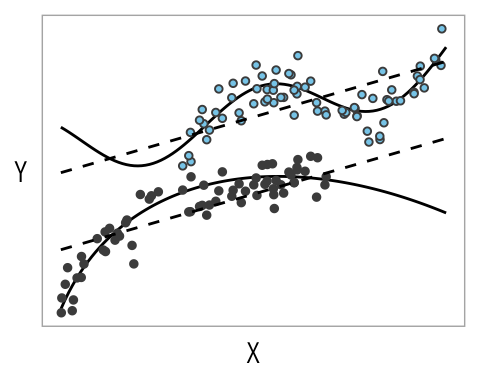
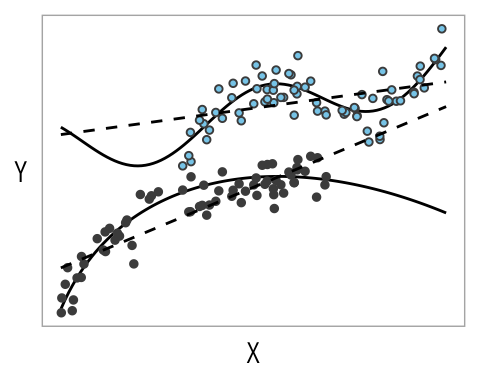
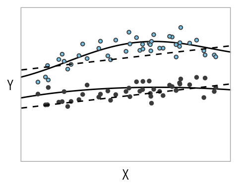
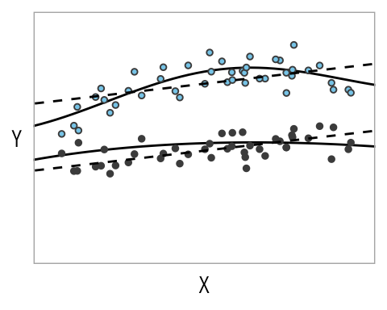

This notebook is about regression in the context of causal inference.
In the usual context of regression, predictive inference relates to comparisons between units. In the context of causal inference, we attempt to make comparisons of different treatments as if applied to the same units.
In order to make causal interpretations of regression coefficients we rely very strong assumptions.
In short, causal effects can be estimated with regression if the model includes all confounding variables and if the model is correct.
If there’s no association between the treatment and the purported confounder (\(\gamma_1 = 0\)), then there is no bias.
In R:
N <-1e3b0 <-1b1 <-2## effect of tb2 <-3g0 <-2g1 <-1## source of correlation between t and zd <- tibble::tibble(z =runif(N, min =-50, max =50),t =rnorm(N, mean = (z - g0)/g1, sd =1),y =rnorm(N, mean = b0 + b1*t + b2*z, sd =1))mtrue <-lm(y ~ t + z, data = d)mconf <-lm(y ~ t, data = d)modelsummary::msummary(models =list("True DGP"= mtrue, "Omitted Variable"= mconf), gof_map =NA)
True DGP
Omitted Variable
(Intercept)
1.028
6.921
(0.070)
(0.098)
t
2.017
5.002
(0.032)
(0.003)
z
2.985
(0.032)
Here, we see that \(\beta_1 \approx 2\) and \(\beta_1^* \approx 5\).
5.1.1 The Electric Company
Setting up a regression for causal inference
Going back to the Electric Company example, we can think of supp, whether teachers chose to replace or supplementing the regular reading program with the television show, as a different treatment.
Given that this decision is not randomized, we cannot simply compare outcomes across the two new treatment groups. However, we can assume ignorability if we are willing to believe that pre_test is the only confounding variable—i.e., that the probability of assignment was determined by the average pre-test scores in that classroom. This is a strong assumption, it requires a leap of faith.
Note. The grade coefficients are increasingly negative because they are positively correlated with pre-test scores. Remember, we cannot interpret confounders causally(see Westreich and Greenland 2013).
(b) Regression on non-random treatment indicator and pre-test
Figure 5.2: Estimates, 50%, and 95% intervals for the effect of watching The Electric Company as a supplement rather than a replacement. The same model has been fitted separately for each grade.
5.2 Notation
The logic of regression adjustments is relatively straightforward, we want apples to apples comparisons. This is the same logic behind matching and weighting.
Instead of a simple independence assumption that we have for randomized experiments, we now have to rely on a conditional ignorability. Just like in the case of experiments, we want distribution of potential outcomes the same across levels of the treatment variable. In other words, the potential outcomes and the treatment indicator should be independent, conditional on the covariates \(\boldsymbol{X}\) used in the analysis.
\[
Y^0, Y^1 \perp T \mid \boldsymbol X
\tag{5.1}\]
This strategy will get more complicated as the vector \(\boldsymbol X\) grows in size.
Once the number and type of confounders gets more complicated, perhaps the simplest parametric model that we can fit to estimate these expectations is linear regression. For instance, if we assume that the treatment effect, \(\tau\), is constant (or at least additive) we might posit that \(E( Y^Z \mid \boldsymbol X) = \beta_0+ \boldsymbol{X \beta}+ \tau Z\) . If ignorability is satisfied and this model holds, we simply need to regress the outcome on the treatment indicator and confounders. The estimated coefficient on \(Z\) from this fit, \(\hat \tau\), can be conceptualized as a weighted version of all of the conditional effect estimates. However, fitting a model to estimate these quantities is not without potential weaknesses. The two most obvious concerns are imbalance and lack of complete overlap…
Note. This sometimes shows up in econometrics as the exogeneity assumption.
5.3 Balance and Overlap
The sort of bias that we get from confounding can be interpreted more precisely as imbalance in the potential outcomes across treatment groups. This is the sort of imbalance is unlikely with randomization, but it’s almost guaranteed in observational studies.
There are different methods that attempt to address imbalance and lack of overlap: stratification, regression adjustments, matching, weighting, or a combination of these.
Imbalance and lack of complete overlap are issues for causal inference even if ignorability holds because they force us to rely more heavily on model specification and less on direct support from the data.
Imbalance occurs if the distributions of confounders differ for the treatment and control groups. Figure 5.3 shows two examples of imbalance with respect to a single covariate \(x\). The problem with imbalance is that it forces us to rely more heavily on model specification and less on direct support from the data. This is true even if ignorability holds.
Averaging over each group separately, solving the second equation for \(\beta_0\), and then plugging that into the first equation to solve for \(\theta\) yields the following equation:
This is why it’s so important to get the model specification right. For example, notice that if we don’t include the quadratic term in the linear model, the estimate of \(\theta\) will be off by \(\beta_2 (\overline {x^2_t} - \overline {x^2_c})\).
More importantly, if the distribution of covariates is similar across treatment groups, then the model specification matters less—i.e., if there is balance, then \(\overline x_t - \overline x_c\) is closer to zero. This is why methods that match or weight to create balance may help to create some immunity from failure to correctly specify the model.
5.3.2 Lack of Complete Overlap
Figure 5.4 shows what lack of complete overlap (with respect to \(x\)) might look like:
(c) The range of one distribution is a subset of the range of the other.
Figure 5.4: Lack of complete overlap in distributions across treatment and control groups.
Lack of complete overlap creates problems because in this setting we have treatment or control observations for which we have no empirical counterfactuals. Thus, in regions of non-overlap, knowledge about treatment effects is inherently limited.
Figure 5.5 shows how inferences regarding areas with no overlap inevitably rely on modeling assumptions. A traditional regression model fitted to data without complete overlap is forced to extrapolate beyond the support of the data.
Note, however, that even the incorrectly specified linear regression lines provide a decent fit in the overlapping region, as shown in Figure 5.5 (c) and Figure 5.5 (d).
Code
fY1 <-function(x) exp(x/5) +2*cos(x +1) +15fY0 <-function(x) 6*log(x +1) -0.08*x^2+5d_sim <-tibble(x =runif(100, 0, 10),control =rnorm(length(x), mean =fY0(x), sd =1),treatment =rnorm(length(x), mean =fY1(x), sd =1),) |>pivot_longer(cols = control:treatment, names_to ="z", values_to ="y", names_transform = factor ) |>filter(z =="control"& x <=7| z =="treatment"& x >=3)par_s <-lm(y ~ x + z, data = d_sim)var_s <-lm(y ~ x*z, data = d_sim)sub_par_s <-lm(y ~ x + z, data = d_sim, subset = x >=3& x <=7)g <- d_sim |>ggplot(aes(x, y)) +geom_function(fun = fY0) +geom_function(fun = fY1) +geom_point(aes(shape = z), show.legend =FALSE, fill ="skyblue", color ="#4C4C4C", size =1) +scale_shape_manual(values =c(19, 21)) +labs(x ="X", y ="Y") +theme(axis.title.y =element_text(angle =0, vjust =1/2),axis.text =element_blank(),axis.ticks =element_blank(),panel.grid =element_blank() )d_grid <- tidyr::crossing(x =seq(0, 10, length.out =100),z =factor(c("control", "treatment")))g +geom_line(data = broom::augment(par_s, newdata = d_grid),mapping =aes(x, .fitted, group = z),linetype ="dashed" )g +geom_line(data = broom::augment(var_s, newdata = d_grid),mapping =aes(x, .fitted, group = z),linetype ="dashed" )g +coord_cartesian(xlim =c(3, 7)) +geom_line(data = broom::augment(par_s, newdata = d_grid),mapping =aes(x, .fitted, group = z),linetype ="dashed" )g +coord_cartesian(xlim =c(3, 7)) +geom_line(data = broom::augment(sub_par_s, newdata = d_grid),mapping =aes(x, .fitted, group = z),linetype ="dashed" )

(a) A regression estimating the effect of a treatment on \(Y\), adjusting for \(X\).

(b) Allowing for an interaction sometimes makes extrapolation worse.

(c) The view is restricted to the area of overlap.

(d) New regression lines fitted using only observations in this overlapping region.
Figure 5.5: Hypothetical data demonstrating the problems with extrapolation when there is lack of overlap between covariates. The “true” causal effect is the vertical distance between the two solid lines. The estimated causal effect is the vertical distance between the two dashed lines.
Temporal ordering Gelman, Hill, and Vehtari (2020, 414)
Gelman, Andrew, Jennifer Hill, and Aki Vehtari. 2020. Regression and Other Stories. Cambridge University Press.
Huntington-Klein, Nick. 2021. The Effect: An Introduction to Research Design and Causality. New York: Chapman; Hall/CRC. https://doi.org/10.1201/9781003226055.
Westreich, Daniel, and Sander Greenland. 2013. “The Table 2 Fallacy: Presenting and Interpreting Confounder and Modifier Coefficients.”American Journal of Epidemiology 177 (4): 292–98. https://doi.org/10.1093/aje/kws412.